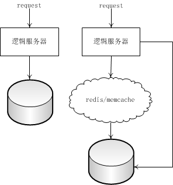
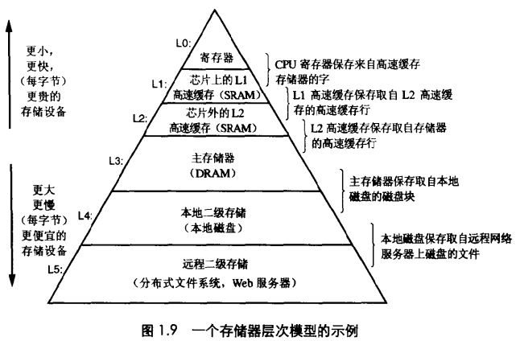

redis 在缓存系统所处的位置
通常，在系统中，我们会把数据交由数据库来存储，但传统的数据库增删查改的性能较差，且比较复杂。根据 80/20 法则，百分之八十的业务访问集中在百分之二十的数据上。是否可以有一个存在于物理内存中的数据中间层，来缓存一些常用的数据，解决传统数据库数据读写性能问题。常用的数据都存储在内存中，读写性能非常可观。

这种思维在计算机中很常见，之前学习计算机系统的时候就有见过这张图：越往上层的存储设备，存储的速度就会更快。诸如，redis

包括 redis/memcache 这样的 key-value 内存存储系统，非常适合于读多写少的业务场景，而 redis 是一个基于多种数据结构的内存存储系统，让缓存系统更加好玩。